Recursion#
Introduction to computer programming
Management and Artificial Intelligence
Preliminaries#
Recursion is a powerful programming technique where a function calls itself to solve smaller instances of the same problem. It’s a fundamental concept in computer science and programming, enabling the creation of elegant and efficient solutions to complex problems.
To understand recursion properly, we need to first explore two fundamental data structures:
Stacks: Essential for tracking recursive function calls
Queues: Similar to Stacks, but with a different order of operations
Stacks#
The stack is one of the most popular abstract data types in computer science.
A stack is a sequence (collection) of elements where only the last element (i.e., the one at the top of the stack) can be accessed.
The allowed operations on a stack \(\mathcal{S}\) are the following:
push(\(e\),\(\mathcal{S}\)): adds a new element \(e \in V\), for any domain \(V\), at the top of the stack \(\mathcal{S}\)pop(\(\mathcal{S}\)): returns and removes the current element at the top of the stack \(\mathcal{S}\).
Optionally, it is possible to define an additional operation:
peek(\(\mathcal{S}\)): reads the top element without modifying the stack.
A special domain value is \(\mathcal{S}_\emptyset\), namely the empty stack.
As \(\mathcal{S}_{\emptyset}\) has no elements:
pop()is not allowedpeek()is not allowed.
The stack is a LIFO (Last-In, First-Out) data structure, because:
the last element that entered the stack (i.e., via
push())…is the one that will be removed first (i.e., via
pop())
Effect of push() and pop() over a stack:
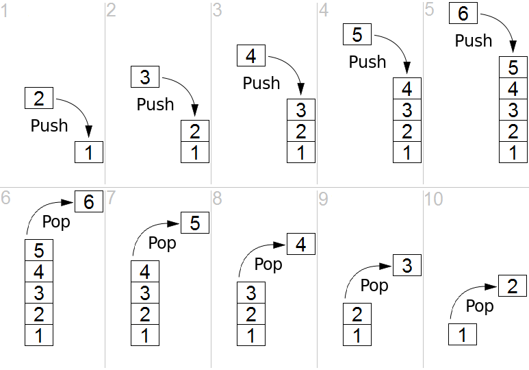
Simulating a Stack in Python#
You can simulate the behaviour of a stack with lists.
S = [] # start with an empty stack
S.insert(0, 1) # step 1 in previous slide
S.insert(0, 2) # step 2 in previous slide
S.insert(0, 3) # step 3 in previous slide
S.insert(0, 4) # step 4 in previous slide
S.insert(0, 5) # step 5 in previous slide
S.insert(0, 6) # step 6 in previous slide
print(S)
S.pop(0) # step 7 in previous slide
S.pop(0) # step 8 in previous slide
S.pop(0) # step 9 in previous slide
S.pop(0) # step 10 in previous slide
S.pop(0) # step 11 in previous slide
print(S)
[6, 5, 4, 3, 2, 1]
[1]
lst.insert(x, y) inserts value y at position x in list lst.
S = [] # start with an empty stack
S.append(1) # step 1 in slide 4
S.append(2) # step 2 in slide 4
S.append(3) # step 3 in slide 4
S.append(4) # step 4 in slide 4
S.append(5) # step 5 in slide 4
S.append(6) # step 6 in slide 4
print(S)
S.pop() # step 7 in slide 4
S.pop() # step 8 in slide 4
S.pop() # step 9 in slide 4
S.pop() # step 10 in slide 4
S.pop() # step 11 in slide 4
print(S)
[1, 2, 3, 4, 5, 6]
[1]
Queues#
The queue is another popular abstract data type in computer science.
A queue is a sequence (collection) of elements where only the “oldest” element can be accessed.
The allowed operations on a queue \(\mathcal{Q}\) are the following:
enqueue(\(e\),\(\mathcal{Q}\)): adds a new element \(e \in V\), for any domain \(V\), at the beginning (back) of the queue \(\mathcal{Q}\)dequeue(\(\mathcal{Q}\)): returns and removes the current element at the end (front) of the queue \(\mathcal{Q}\).
Optionally, it is possible to define an additional operation:
peek(\(\mathcal{Q}\)): reads the last element without modifying the queue.
A special domain value is \(\mathcal{Q}_\emptyset\), namely the empty queue.
As \(\mathcal{Q}_\emptyset\) has no elements:
dequeue()is not allowedpeek()is not allowed.
The queue is a FIFO (First-In, First-Out) data structure, because:
the first element that entered the queue (i.e., via
enqueue())…is the one that will be removed first (i.e., via
dequeue())
Visual representation of a queue:
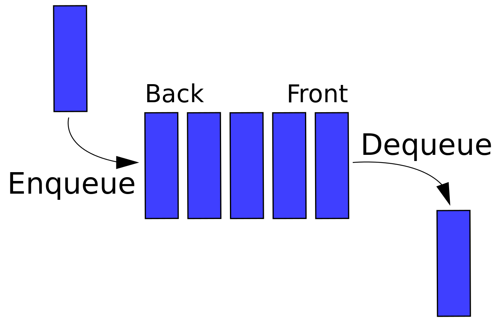
Simulating a Queue in Python#
You can simulate the behaviour of a queue with lists.
Q = [] # start with an empty queue
Q.insert(0, 1) # insert at the beginning = enqueue
Q.insert(0, 2)
Q.insert(0, 3)
Q.insert(0, 4)
Q.insert(0, 5)
Q.insert(0, 6)
print(Q)
Q.pop() # pop at the end = dequeue
Q.pop()
Q.pop()
Q.pop()
Q.pop()
print(Q)
[6, 5, 4, 3, 2, 1]
[6]
Queue vs. Stack#
Data Structure |
Visual Representation |
|---|---|
Stack |
|
Queue |
{kind=link}
{kind=link}
Or, more informally:
Stack |
Queue |
|---|---|
{kind=link}
{kind=link}
Recursion#
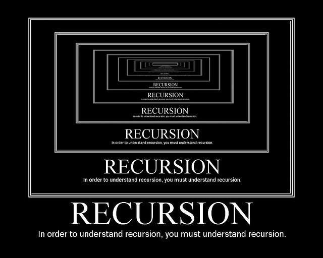
Recursion and Problem Solving#
When designing the solution of a problem
How is that possible?
Practically speaking:
Real-world recursion#
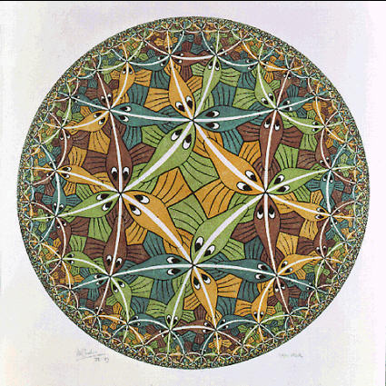
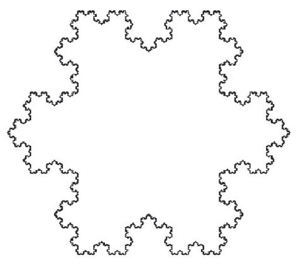
A more practical example? Computing the factorial of a number \(n\):
Back-of-the-envelope calculation: \(5!\)
We can spot the following pattern:
with base case:
Recursion and Problem Solving (cont’d)#
In order to use a recursive approach:
you must be able to decompose the problem into problems of the same type
you must find a relation that connects a given problem to the solution of similar subproblems
you need to know the solution of a special case of the problem (the base case, where the recursion terminates).
Take the factorial example:
multiplication between two numbers
multiplication between \(n\) and the already-known \((n-1)!\)
the base case is \(0!=1\)
Approach for Problem Decomposition#
When solving a task with a recursive approach:
Identify the base case(s): Determine the simplest version of the problem that can be solved directly. For instance: we know that the factorial of 0 is 1, i.e. \(0! = 1\)
Define the recursive case: Break down the problem into a smaller version of the same problem. For instance, the factorial of a number \(n\) can be computed by computing \(factorial(n-1)\).
Ensure progress toward the base case: Make sure each recursive call moves closer to the base case. For instance, the recursive call in the factorial function moves closer to the base case by decreasing the value of n by 1 in each recursive call.
Combine the results: Determine how to combine the result of the recursive call with any additional processing needed. For instance, in the factorial function, we need to multiply the result of the recursive call by the current value of
n.
Verify correctness: Test with simple examples to ensure your recursive solution works properly.
Issues with Recursion#
There are two major issues with recursion:
Infinite recursion
missing base case?
function called with wrong arguments? For example, what happens if we do
(-1)!?
…more on this later
Un-responsiveness
your code can easily become very slow, also with easy input parameters
… more on memory management later
RecursionError: maximum recursion depth exceeded in comparison
Keeping track of recursive calls#
To trace recursive function calls, we need to use a stack data structure:
Each time a recursive function is called, a new frame is pushed onto the call stack, containing the function’s parameters and local variables.
When a function returns, its frame is popped off the stack.
This stack-based mechanism allows the program to remember where to return after each recursive call completes.
Example: countdown#
Write a recursive function countdown(n) that takes a positive integer n and prints the countdown. As the countdown reaches 0, prints Blastoff! and quits.
Identify the base case(s): when \(n=0\), print
Blastoff!
Identify the recursive case(s): when \(n>0\), print \(n\) and call the function with \(n-1\)
Ensure progress toward the base case: the recursive call is with \(n-1\), which is smaller than \(n\) and will eventually reach \(0\), our base case.
def countdown(n):
if n==0:
print("Blastoff!")
else:
print(n)
countdown(n-1)
countdown(3)
3
2
1
Blastoff!
What’s going on here?
(1) The execution of
countdownbegins withn=3, and sincenis greater than0, it outputs the value3, and then calls itself…(2) The execution of
countdownbegins withn=2, and sincenis greater than0, it outputs the value2, and then calls itself…(3) The execution of
countdownbegins withn=1, and sincenis greater than0, it outputs the value1, and then calls itself…(4) The execution of
countdownbegins withn=0, and sincenis not greater than0, it outputsBlastoff!and then returns.
(5) The countdown that got
n=1returns.
(6) The countdown that got
n=2returns.
(7) The countdown that got
n=3returns. And we are back into themainscript.
For a recursive function, there might be more than one frame at the same time. Python organises those frames as a stack.
For instance, the stack diagram for countdown(3) is:
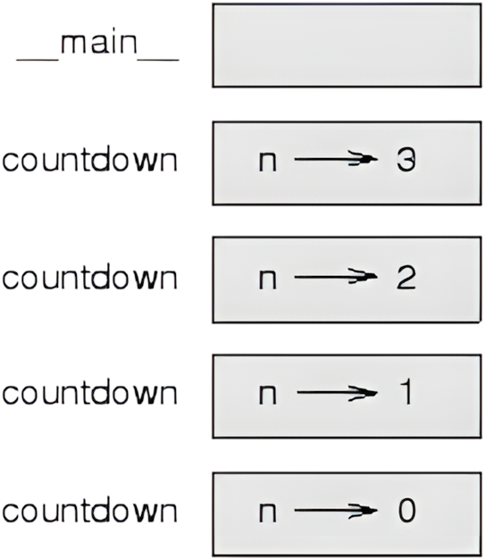
How does the stack in the figure works?
(as usual) at the top of the stack is the frame for the
main*we call
countdown(3), so there is a new frame in the stackcountdown(3)callscountdown(2), so there is a new frame in the stackcountdown(2)callscountdown(1), so there is a new frame in the stackcountdown(1)callscountdown(0), so there is a new frame in the stackcountdown(0)does not make any further calls, so no more frames
* In our case, it is empty because we did not create any variables in main or pass any arguments to it.
We did a bunch of pushes, now we must do some pops:
countdown(0)finishes its execution (i.e., printsBlastoff!without doing anything else). Its frame is erased.the control goes back to
countdown(1), which finishes its execution. Its frame is erased.the control goes back to
countdown(2), which finishes its execution. Its frame is erased.the control goes back to
countdown(3), which finishes its execution. Its frame is erased.the control goes back to the
main.
Exercises#
factorial#
Write a recursive function factorial(n) that takes as input a positive integer n and returns \(n!\)
Computing the factorial of a number \(n\):
Hence:
Base case:
When \(n=0\), then \(1\)
This comes from: \(0! = 1\)
Recursive case:
otherwise we know that the factorial of \(n\) is \(n\) times the factorial of \(n-1\)
This comes from \(n! = n \cdot (n-1)!\)
def factorial(n):
if n==0:
return 1
else:
return n * factorial(n-1)
output = factorial(5)
print(output)
120
factorial(-1)?
Stack diagram for factorial(3):
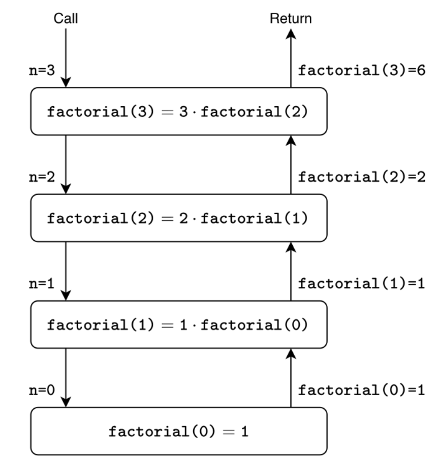
palindrome#
Write a recursive function palindrome(s) that takes as input a string s and returns True if s is palindrome and False otherwise.
Decomposition strategy: let s be "racecar"
racecar -> same letter ✓
aceca -> same letter ✓
cec -> same letter ✓
e -> trivial ✓
and now let s be "rediviuer"
rediviuer -> same letter ✓
ediviue -> same letter ✓
diviu -> different letter ✗
Hence, "racecar" is palindrome, but "rediviuer" it’s not.
From what we have seen so far:
Base case:
when the string is empty or 1 character long, it is a palindrome
Recursive case:
otherwise, check if the first and last characters are the same
if they are, remove the first and last characters and recursively check the remaining string
if they are not, it is not a palindrome
def palindrome(s):
if len(s) <= 1:
return True
else:
return (s[0] == s[-1]) and palindrome(s[1:-1])
output1 = palindrome("racecar")
print(output1)
output2 = palindrome("rediviuer")
print(output2)
True
False
Stack diagram for palindrome("racecar"):
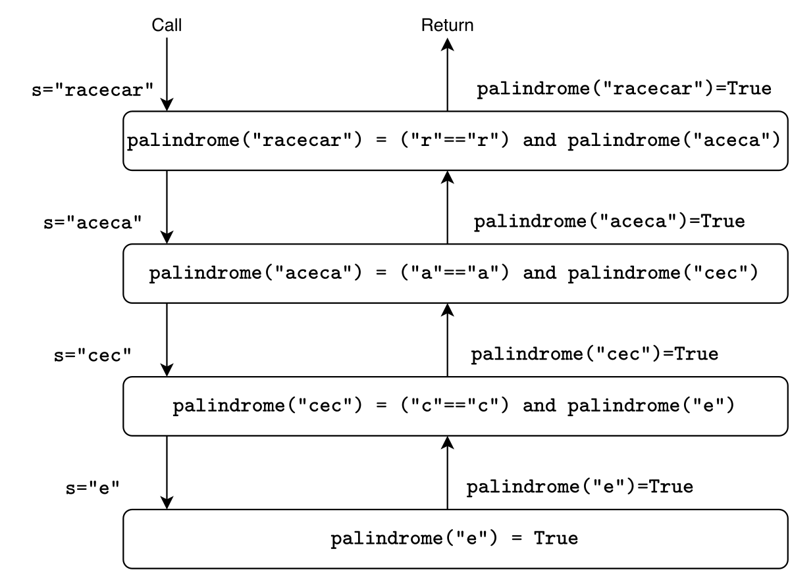
Stack diagram for palindrome("rediviuer"):
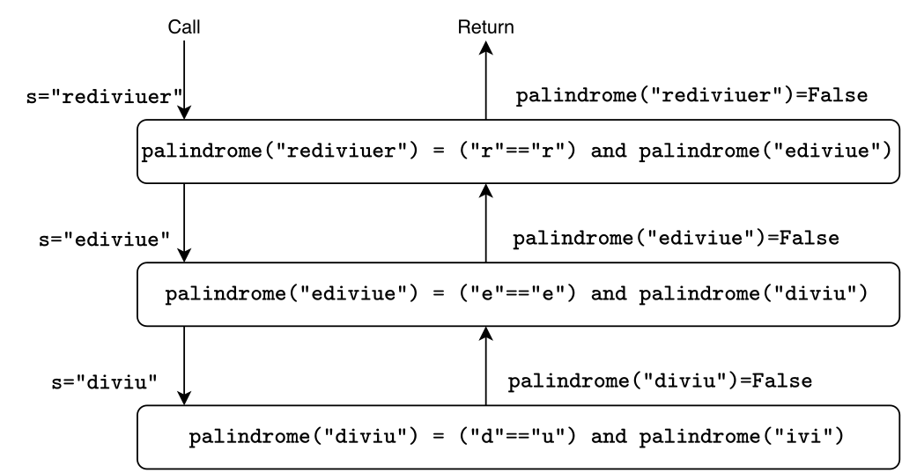
fibonacci#
Write a recursive function fibonacci(n) that takes as input a positive integer n and returns the \(n\)-th Fibonacci number.
where \(F(0) = 0\) and \(F(1) = 1\).
Hence: 0 1 1 2 3 5 8 13 …
Decomposition strategy: fibonacci(n) with n=5*:
* By coincidence, the 5th Fibonacci number is 5.
From what we have seen so far:
Base case:
When \(n=0\), then \(f(0) = 0\)
When \(n=1\), then \(f(1) = 1\)
Recursive case:
Otherwise the fibonacci number is the sum of the previous two numbers, i.e., \(f(n) = f(n-1) + f(n-2)\)
def fibonacci(n):
if n in [0, 1]:
return n
else:
return (fibonacci(n-1) + fibonacci(n-2))
output = fibonacci(5)
print(output)
5
Call Stack diagram for fibonacci(5):
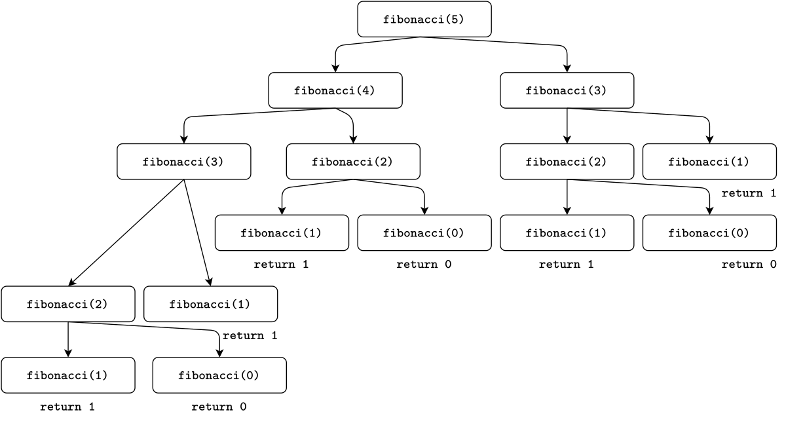
Return Stack diagram for fibonacci(5):
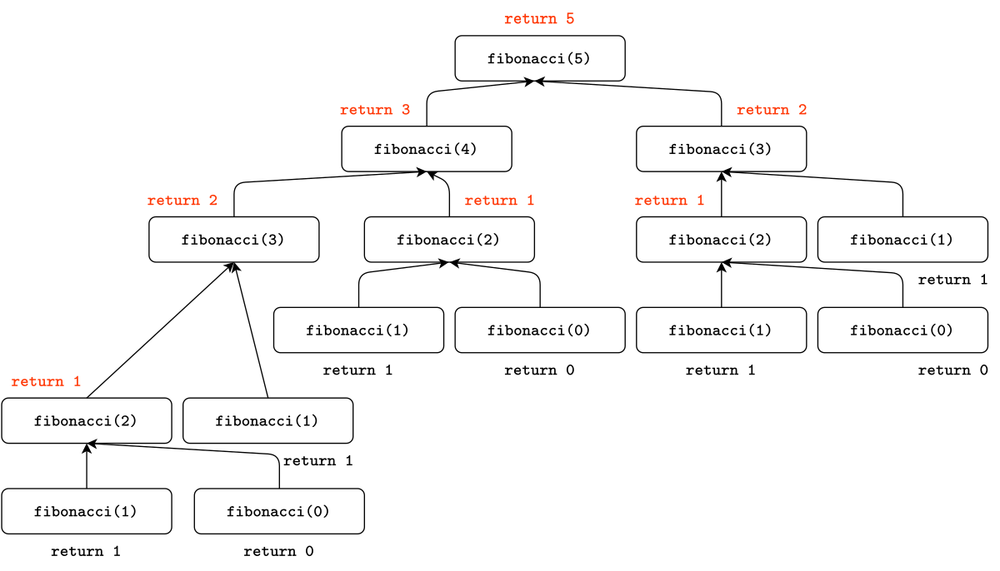
Exercise session#
Find the exercises for the exam session: here